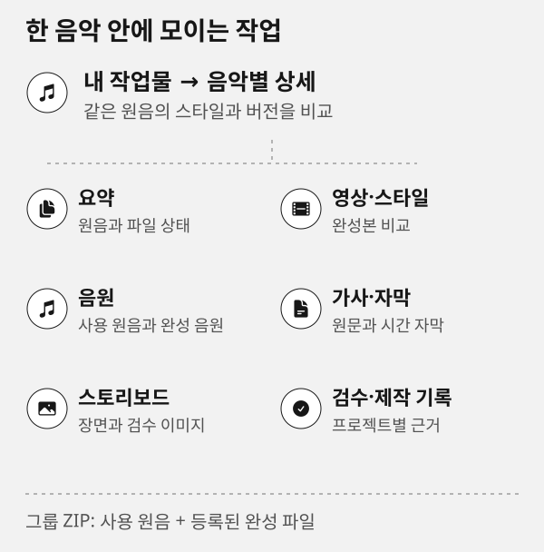

상태: 준비·제작·완료를 구분하기
이 페이지의 기능과 다음 단계를 확인한 뒤 제작실에서 작업하세요.
이 문서 목차
상태 페이지는 현재 로컬 제작실과 공개 CLI가 무엇을 할 수 있는지 읽기 전용으로 보여 줍니다. 여기서 서비스·모델·렌더·업데이트를 자동 시작하지 않습니다.
같은 원음으로 만든 스타일과 버전을 한곳에서 확인합니다.
- 요약
원음과 전체 파일 상태
- 영상·스타일
스타일별 완성본 비교
- 음원
사용 원음과 완성 음원
- 가사·자막
원문과 시간 자막
- 스토리보드
장면 구성과 검수 이미지
- 검수·제작 기록
프로젝트별 의견과 근거
음악 그룹 ZIP에는 사용한 원음과 등록된 완성 파일이 함께 담깁니다.
SVG 도식 원본 보기

세 가지 상태를 따로 읽습니다
- 제작실 준비 상태로컬 서버, 현재 프로젝트, 원음, 결과 등록 상태입니다. 화면이 열렸다는 사실만으로 렌더가 끝난 것은 아닙니다.
- CLI·엔진 상태현재 schema, 서비스, 대기열과 설치된 기능의 조회 결과입니다. 지원하지 않는 명령이나 모델을 대신 설치하지 않습니다.
- 작업 결과 상태실제 등록 파일, 원음 SHA-256 비교, 누락·변경 여부입니다. 파일이 있어도 현재 원음과 다르면 완료본으로 승인하지 않습니다.
확인 순서
/status/에서 현재 프로젝트와 로컬 서비스 상태를 읽습니다.- 필요한 명령은
/reference/또는 설치된schema에서 지원 여부를 확인합니다. - 결과가 있다면 내 작업물에서 원음 상태와 실제 파일을 재생·확인합니다.
- 가사가 있으면 원가사·자막·확정/추정 싱크 근거를 결과 검수에 남깁니다.
저장공간 검사 항목
저장공간 검사 항목은 공개 storage:tracking의 status와 같은 설치 상태를 표시합니다. 등록 프로젝트 캐시·완료 작업 자료·작업 폴더·과거 검증 자료·Git 등의 활성화 여부와 비활성 이유를 확인하세요. 대상이 없는 검사는 실행하지 않으며, 활성화는 삭제 가능한 파일이 있다는 판정이 아닙니다. 실제 정리에서는 대상·보호 상태·미리보기를 다시 검증합니다. 기존 storage:status는 capability와 저장공간 이력 경로를 함께 보여 줍니다.
상태 새로 고침은 파일 존재와 저장된 메타데이터만 확인합니다. 전체 폴더 스캔·파일 해시·Git 객체 분석·SQLite 정리를 시작하지 않습니다. Git 저장소가 없는 설치에서는 Git 공간 관리가 비활성화되며, 있는 환경도 명시적으로 Git 검사를 선택할 때만 객체를 분석합니다. 자세한 정리는 저장공간 관리와 소유권·SQLite 상세 안내를 참고하세요.
연결이 끊겼거나 결과가 불확실할 때
uncertain:true는 같은 생성이나 영상 렌더를 다시 제출하라는 뜻이 아닙니다. 먼저 서비스·대기열·영상 상태와 지정한 출력 경로를 조회해 이미 실행·완료됐는지 확인합니다. 결과가 확인되지 않을 때만 원인을 기록하고 다음 조치를 판단하세요.
상태 기록 예시
제작실: 준비됨
영상 렌더: 결과 파일·video:state 확인 필요
가사 싱크: 추정 3행, 원문 유지·근거 재검수 대기공개 명령 레퍼런스 · CLI 오류와 복구 · 문제 해결
긴 상태 데이터 읽기
기본 카드는 핵심 값 최대 6개와 짧은 요약을 보여 줍니다. 명령 목록이나 상세 JSON처럼 긴 응답은 전체 응답 보기를 열면 카드 안의 스크롤 영역에서 확인할 수 있습니다. 접혀 있어도 원문은 유지되며, 원문에 명령 이름이 있다는 이유로 그 명령을 실행하거나 설치하지 않습니다.